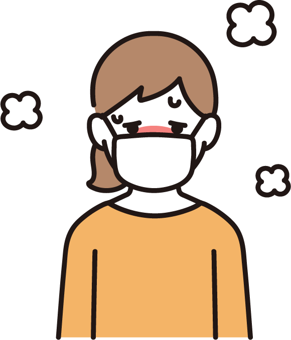
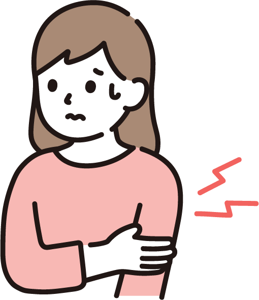
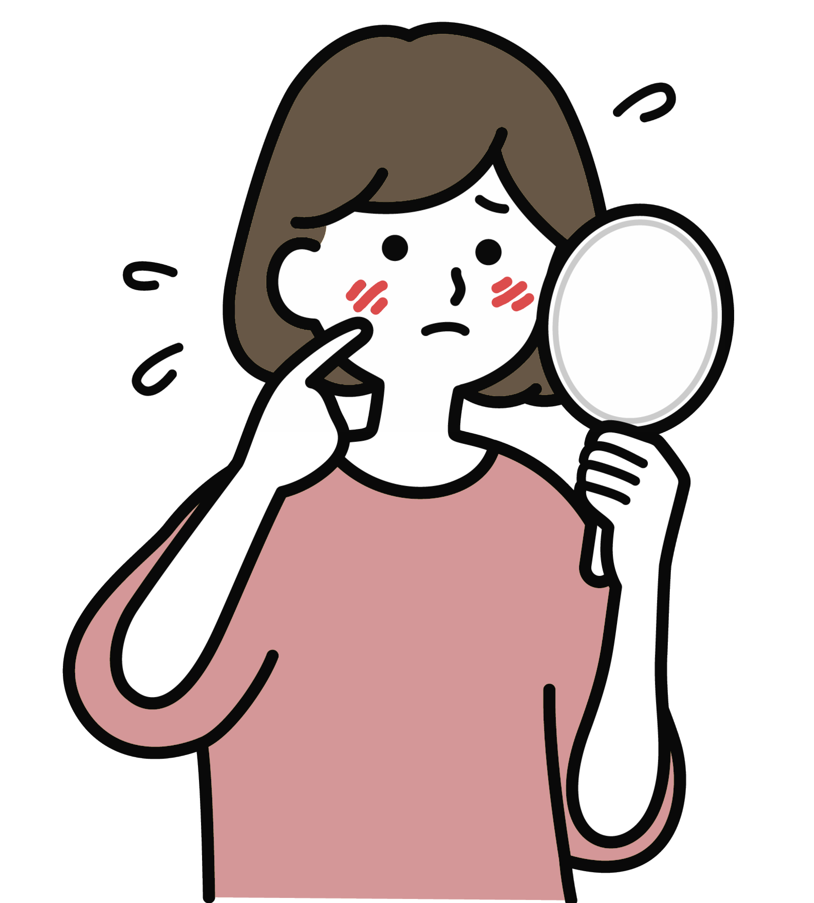
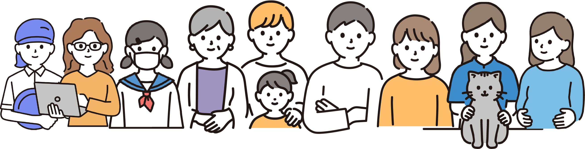

私たちのSLE
笑って生きていくために一緒に考えよう
SLE 全身性エリテマトーデス
圧倒的に女性が多い国指定の難病
SLEとは
全身性エリテマトーデスは、細菌やウイルスと戦う免疫機能が異常
をきたし、自分自身の身体を傷つけてしまう「膠原病」の一つです。
英語の病名 Systemic Lupus Erythematosus の頭文字をとり
SLEと呼ばれます。
身体のさまざまな場所・臓器に症状が
あらわれることから Systemic（全身）、オオカミに噛まれたような
赤い紅斑（腫れ）が頬にできることから Lupus（ラテン語でオオ
カミ）、Erythematosus（紅斑）と命名されています。
初期症状
三大初期症状は発熱、関節炎、皮疹です



その他の初期症状を調べてみました
リンパの腫れ
脱毛
体のだるさ
脱力感などなど
（ご協力いただきました皆さま、ありがとうございました）
患者数・男女比・発症年齢
患者数
指定難病として申請をしている患者さんは2019年で約61,800人＊います。
しかし、申請をしていない患者さん、治療を受けていない患者さんもおり、実際には約2倍の患者さんがいると推測されています。
＊特定医療費（指定難病）受給者証所持者数
男女差
男女比は1：9で、女性が多いです。

発症年齢
10代から70歳以上まで、幅広い年齢の患者さんが治療を受けられています。
発症年齢も幅広いですが、特に妊娠や出産が可能な20～40代の女性に多いとされています。
SLEの原因
はっきりした原因はわかっていません。
なんらかのきっかけによって病気が起こったり、悪化したりすることが考えられます。
きっかけや誘因には大きく分けて４つあり複雑に組み合わさっていると考えられています。
【環境要因】 紫外線に浴びたり、特定のウイルス感染、寒冷刺激、外傷、手術、妊娠・出産、薬剤、ストレスが想定されています。
【遺伝的要因】 病気と関連する遺伝子が幾つか報告されています
【免疫の異常】 自分の体を免疫が攻撃してしまう。
【性ホルモン】発症時期が20〜30代が多いことから性ホルモンが影響されていると考えられてます。
免疫の異常とは
自分の体を自分の免疫が攻撃してしまう、自己免疫反応によりさまざまな炎症が起こります。
抗体はウイルスや細菌などにくっついて捕まえ、体を守ります。
SLEなどの自己免疫疾患では血液中に抗核抗体があると、自分の細胞内の核の成分を攻撃し、くっついて免疫複合体を作ります。
免疫複合体が血液に乗って体内を流れ、腎臓や皮膚などにくっついたり、たまったりして炎症が起こます。
長期的な経過
長期的な経過をたどる病気です。
症状が悪化する時を活動期、症状が軽い時を寛解期といいます。
症状が落ち着いてからも薬を服用しないといけないのでわたしたちには根気が必要です。
症状が落ちつていれば健康な人とほとんど変わらない日常生活を送れます。
病気とうまく付き合いながら暮らすのは変わりないですが仕事・学校や家事、育児などを行えます。
症状がぶり返す再燃の可能性もあるので前触れに気付くように体調をこまめにチェックし、簡単な日記などを利用して体調の変化を把握し、悪化しても素早い対処ができます。
1日の中でも症状が変動するので細かい変化に神経質になりすぎないようにしてみてください。
©2021-2025 わたしたちのSLE. ALL RIGHTS RESERVED.